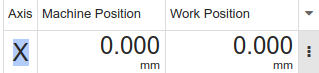

|
cncjs autolevel widget blog November 2018 |
|
|
cncjs autolevel widget blog November 2018 |
Table of Contents
Installation for Development 1
Ways to output text for debugging purposes 5
Passing Data from Grbl Controller to Autolevel Widget 8
Serial port Data Parsing and sending probe data to the widget 11
Display messages that are stored in G-Code 13
Have to click Resume several times for one G-Code Line 13
modify CNC.JS to output the probing results.
Modify autolevel widget to output the measured probe positions.
what have we learned so far?
web site installation instructions:
https://github.com/cncjs/cncjs
cnc.js is based on node.js
npm install -g cncjs
installs at
/home/user/.nvm/versions/node/v6.14.4/lib/node_modules/cncjs
The file package.json has settings
the command cnc executes
/home/tmeng12/.nvm/versions/node/v6.14.4/lib/node_modules/cncjs/dist/cnc/cnc.js
I verified this by adding a line
console.log('I added this line in the cnc function!!!!');
which shows up in the terminal window.
The file cnc.js establishes the web server at http://127.0.1.1:8000 with the lines
var defaultHost = (0, _isElectron2.default)() ? '127.0.0.1' : '0.0.0.0';
var defaultPort = (0, _isElectron2.default)() ? 0 : 8000;
What are the files that get loaded when I open a browser at http://127.0.1.1:8000?
When I rename
/home/tmeng12/.nvm/versions/node/v6.14.4/lib/node_modules/cncjs/dist/cnc/web
to
/home/tmeng12/.nvm/versions/node/v6.14.4/lib/node_modules/cncjs/dist/cnc/web2
and reload the browser, the browser says error, so cnc.js needs this directory.
I can rename the app directory and the browser gets no error. Same with electron-app so the code must be in the web directory.
The web folder has a lot of large files with file name that look automatically generated. There is a src/web folder on github
on the other hand with a lot of human readable names so I wonder if a build process compresses the source files into the ones in web.
The file manifest.json contains a list of regular file names next to the machine generated ones, such as
"app.js": "app.93a4b607d53b7857fb1d.bundle.js?_=1520353491444",
Modified app.93a4b607d53b7857fb1d.bundle.js and it shows up in the browser!!!
Apparently, these files are created in a build process.
There is a dist folder in the installed version but not in the source code repository.
There is no src folder in the installed version but in the source code repository.
The source code repository has a script folder.
In the script folder, there is a file named prebuild-prod.sh.
In prebuild-prod.sh, trhere is a line "mkdir -p ../dist/cnc/" (images/cncjs.png!!!)
To use the scripts, we need babel:
npm install -g babel-cli
scripts/prebuild-prod.sh
leads to the creation of dist/cnc/electron-app but not dist/cnc/web
However, package.json contains a script section. In this file is a number of build commands, some of which refer to a web folder.
The command
npm run build-prod-web
will create the desired web folder.
The cnc.js can now be started by typing
npm start
As with the installed version of cnc.js, modifying dist/cnc/web/app.93a4b607d53b7857fb1d.bundle.js has the same effect in the browser.
Test: Installation on a new computer
- install npm by sudo apt install npm
- npm update
- download zip from cnc.js github
- extract
- cd cncjs-master/
- npm run build-prod-web
- npm run build-latest
- npm start
works!
2018-10-31
unused vars error:
npm run eslint
to check code before compiling.
2018-11-01
file .eslint.rc in root
add line
"no-unused-vars": "off"
inside
"rules": {
}
In the root of the project, run
npm run build-prod
at the new version, this leads to error
events.js:160
throw er; // Unhandled 'error' event
^
Error: This socket has been ended by the other party
In that case, build van be completed sucessfully by building parts separately.
The build-prod script stands for
"build-prod": "concurrently --kill-others-on-fail --names \"build-prod-app,build-prod-web\" \"npm run build-prod-app\" \"npm run build-prod-web\"",
Instead of running build-prod, first run
npm run build-prod-app
when it is finished, run
npm run build-prod-web
To prevent certain code issues from causing an error in building, edit .eslintrc and/or .eslintrc.js
example
In eslint:
"rules": {
"lines-between-class-members": "off",
"no-unused-vars": "off",
"max-lines-per-function": "off",
}
Adding messages to verify program flow:
File:
GrblController.js
import logger from '../../lib/logger';
52: log.silly('hello hello !!!');
and start in vvv level
npm run start-vvv
the message is shown in terminal
To run the npm script in full verbose debug mode, add
"start-vvv": "./bin/cnc -vvv",
in scripts section of package.json
and start with
npm run start-vvv
the function log.error will output in the terminal at the lowest and any verbosity level
Note: this function does not work in the widgets. Tried and leads to error.
src/web/widgets/Laser/index.jsx
11: import logger from '../../../app/lib/logger';
26: const log = logger('mymessage');
log.error('laser render');
build error:
[build-prod-web] ERROR in app.ec88caec6ebd82700886.bundle.js?_=1541972832270 from UglifyJs
File:
src/web/widgets/Console/index.jsx
103: this.terminal.writeln('hello');
which shows up in the console! :-)
File:
GrblController.js
492: this.emit('serialport:read', `test ALARM:${code} (${alarm.message})`);
shows up in console
For widgets:
use universal-logger and open console in browser
Chrome: CRTL-J
|
|
src/web/widgets/Macro/index.jsx |
|
11 |
import log from '../../lib/log'; |
|
70 |
log.error('full screen toggled'); |
shows up in browser console
the server is created in
nodeDevelop/cncjs-autolevel/src/app/index.js
const createServer = (options, callback) => {
There is a function const appMain = () => {
in
nodeDevelop/cncjs-autolevel/src/app/app.js
If I delete it and run
npm run prepare
I get error
nodeDevelop/cncjs-autolevel/src/app/index.js
18:17 error Unable to resolve path to module './app' import/no-unresolved
2018-11-06
the code for GRBL controller communication appears to be in
cncjs-autolevel/src/app/controllers/Grbl/GrblController.js
here a class named GrblController is defined.
It contains a variable named controller which is of type Grbl
38: this.controller = new Grbl();
Grbl is defined in
cncjs-autolevel/src/app/controllers/Grbl/Grbl.js
588: class Grbl extends events.EventEmitter {
2018-10-30
removed Start-Y section from /media/data/Dropbox/shared/Tobias-tmbscience/cncjs-autolevel/src/web/widgets/Autoleveller/Autoleveller.jsx
and it shows up accordingly on web page
There are several widgets that receive data from GrblController.js, for example the Axes widget.
How are the data sent from the GRBL controller to the widget?
In src/web/widgets/Axes/DisplayPanel.jsx
there is a
class DisplayPanel extends PureComponent {
and a render function.
we have a variable named machinePosition
it gets it's value from
|
|
src/web/widgets/Axes/DisplayPanel.jsx |
|
|
const { state, actions } = this.props; |
|
|
const { units, canClick, axes, machinePosition, workPosition } = state; |
so props are used to pass data into the widget which is a React component.
Working backwards from the component:
|
|
src/web/widgets/Axes/DisplayPanel.jsx |
|
35 |
render() { |
|
52 |
return ( |
|
210 |
<span className={styles.integerPart}> {machinePosition.x.split('.')[0]}</span> |
The value of machinePosition is used to display in the axes widget

the value of machinePosition is assigned from this.props
DisplayPanel is instantiated in
|
|
src/web/widgets/Axes/Axes.jsx |
|
|
const Axes = (props) => { |
|
|
const { config, state, actions } = props; |
|
|
return ( |
|
|
<div> |
|
|
<DisplayPanel config={config} state={state} actions={actions} /> |
so DisplayPanel receives its props from Axes, Axes passes the props down to DisplayPanel.
Axes is instantiated in
|
|
src/web/widgets/Axes/index.jsx |
|
87 |
class AxesWidget extends PureComponent { |
|
686 |
render() { |
|
811 |
<Axes config={config} state={state} actions={actions} /> |
It seems like this calls is added to the listeners of the controller. Could this be the connection to the Grbl data received from the serial port?
The function controllerEvents() is added to the listeners of the controller:
|
|
src/web/widgets/Axes/index.jsx |
|
528 |
componentDidMount() { |
|
529 |
this.addControllerEvents(); |
|
596 |
addControllerEvents() { |
|
597 |
Object.keys(this.controllerEvents).forEach(eventName => { |
|
598 |
const callback = this.controllerEvents[eventName]; |
|
599 |
controller.addListener(eventName, callback); |
And in the function controllerEvents() , the variable machinePosition is assigned a value from the state
(coming from the controller ?)
|
|
src/web/widgets/Axes/index.jsx |
|
324 |
controllerEvents = { |
|
355 |
'controller:state': (type, controllerState) => { |
|
|
|
|
416 |
this.setState(state => ({ |
|
417 |
units: units, |
|
418 |
controller: { |
|
419 |
...state.controller, |
|
420 |
type: type, |
|
421 |
state: controllerState |
|
|
|
|
|
|
|
|
machinePosition: mapValues({
|
|
|
...state.machinePosition, |
|
|
|
|
|
|
|
|
src/app/controllers/Grbl/GrblController.js |
|
|
|
|
662 |
this.emit('controller:state', GRBL, this.state); |
|
|
|
Added line to GrblController.js
664: log.error('GrblController.js Grbl state');
and it shows up in the terminal.
Especially, it shows up when probe command is issued.
The command
log.error('' + JSON.stringify(this.state));
prints all the values in the state.
Autoleveller widget does not have the controller:state case in controller events.
Perhaps it would be better to clone a different widget for probing output?
Laser seems like a good candidate because it has addListener and controller:state
Added log output to
|
|
src/web/widgets/Laser/index.jsx |
|
11 |
import log from '../../lib/log'; |
|
|
|
|
117 |
log.error('laser lasertest:on'); |
|
123 |
controllerEvents = { |
|
141 |
'controller:state': (type, controllerState) => { |
|
149 |
log.error('laser controller:state'); |
Lasertest info output works (in browser console)
laser controller state also works.
Where does the parsing of serial port data received take place?
|
|
src/app/controllers/Grbl/Grbl.js |
|
395 |
class GrblLineParserResultParameters { |
|
396 |
static parse(line) { |
|
426 |
if (name === 'PRB') { |
|
428 |
log.error('prb found'); |
Leads to output in terminal
2018-11-14T01:32:31.631Z - error: controller:Grbl2 prb found
how can we send the result to the widget?
|
|
src/app/controllers/Grbl/Grbl.js |
|
718 |
if (type === GrblLineParserResultParameters) { |
|
730 |
log.error('Grbl.js: GrblLineParserResultParameters parameters emit'); |
|
731 |
this.emit('parameters', payload); |
Leads to
2018-11-14T02:07:02.325Z - error: controller:Grbl2 Grbl.js: GrblLineParserResultParameters parameters emit
but
|
|
src/web/widgets/Autoleveller/index.jsx |
|
71 |
controllerEvents = { |
|
|
'parameters': (payload) => { |
|
|
log.error('Autolevel Probing PRB'); |
Does not show in browser console.
Note: in order to print state values in console, need to make sure that they already exist
if (Object.prototype.hasOwnProperty.call(state, 'machinePosition')) {
To learn about controller, emit, addListener
google controller emit addlistener
Temporary Solution:
|
|
src/app/controllers/Grbl/GrblController.js |
|
|
this.controller.on('parameters', (res) => { |
|
|
const myobj = { |
|
|
type: 'probing', |
|
|
printed: false, |
|
|
res: res |
|
|
}; |
|
|
this.emit('serialport:read', myobj); |
|
|
// my debug |
|
|
log.error('parameters' + JSON.stringify(res)); |
|
|
this.emit('prbevent', res.raw); |
|
|
}); |
And on the receiving side:
|
|
src/web/widgets/Autoleveller/index.jsx |
|
|
controllerEvents = { |
|
|
'serialport:read': (received) => { |
|
|
if (received.type === 'probing') { |
|
|
// atmelino |
|
|
log.error('Autolevel probing received through serialport:read'); |
|
|
this.setState({ myvals: received }); |
|
|
} |
|
|
const { opt } = received; |
|
|
}, |
It would be better to have its own event for this rather than using serialport:read, but I have tried and the event was not received.
2018-11-17
in vvv mode, entire line of g-code is printed in terminal
file:
src/app/controllers/Grbl/GrblController.js
2018-11-18T02:05:59.941Z - silly: controller:Grbl > M0 (Attach probe wires and clips that need attaching)
First M0, have to click only once:
2018-11-18T02:51:40.938Z - error: controller:Grbl M0 Program Pause in Sender
2018-11-18T02:51:40.941Z - error: controller:Grbl GbrController.js this.sender.onM0 (Attach probe wires and clips that need attaching)
Second M0, have to click twice:
2018-11-18T02:53:49.224Z - error: controller:Grbl M0 Program Pause in Sender
2018-11-18T02:53:52.597Z - error: controller:Grbl2 Grbl.js: prb found
2018-11-18T02:53:52.598Z - error: controller:Grbl2 Grbl.js: GrblLineParserResultParameters parameters emit
2018-11-18T02:53:52.599Z - error: controller:Grbl parameters{"name":"PRB","value":{"result":1,"x":"-82.888","y":"-0.048","z":"-2.676"},"raw":"[PRB:-82.888,-0.048,-2.676:1]"}
first click:
2018-11-18T02:54:30.947Z - error: controller:Grbl M0 Program Pause in Sender
2018-11-18T02:54:30.948Z - error: controller:Grbl GbrController.js this.sender.onM0 (Detach any clips used for probing)
needs second click!
Maybe because of the probing G38.2?
Observation:
if there is one G38.2 command before the M0 command, there is only one click to continue.
if there are teo G38.2 commands before the M0 command, there are two clicks to continue!
|
G38.2 Z-1 F100 (Probe to a maximum of the specified probe height at the specified feed rate) |
|
G92 Z0 (Touch off Z to 0 once contact is made) |
|
G0 Z2 (Move Z to above the contact point) |
|
G38.2 Z-1 F50 (Repeat at a more accurate slower rate) |
|
G92 Z0 |
|
G0 Z2 |
|
M0 (Detach any clips used for probing) |
Getting whole repository from github:
git clone https://github.com/atmelino/cncjs.git
Getting new changes from github:
git pull
Sending new changes to github:
if new files:
git add (name of file or folder)
git commit -a
git push origin master
events.js:160
throw er; // Unhandled 'error' event
^